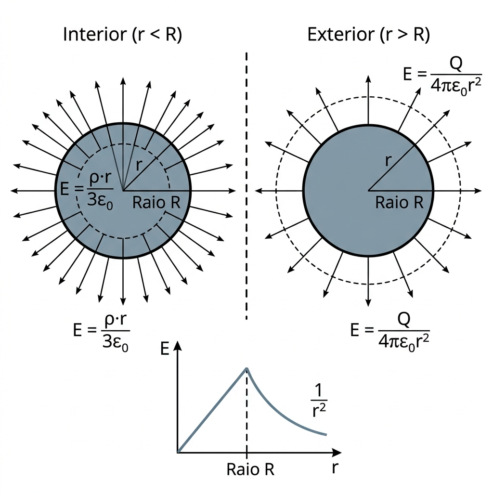
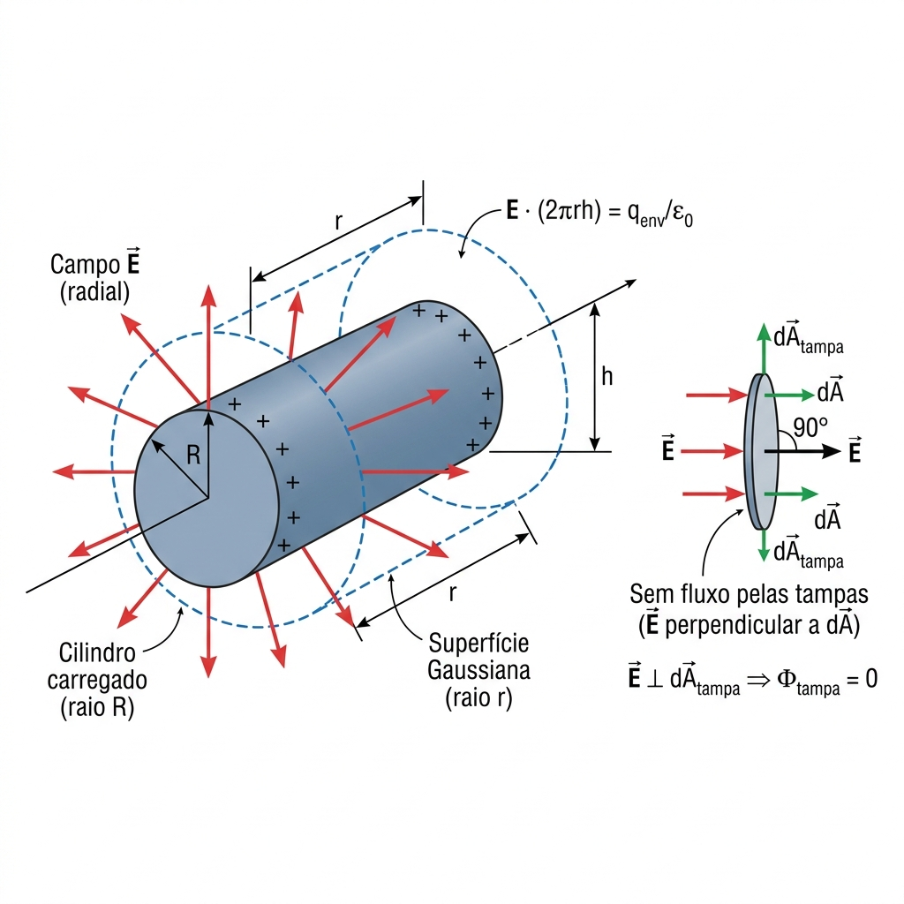
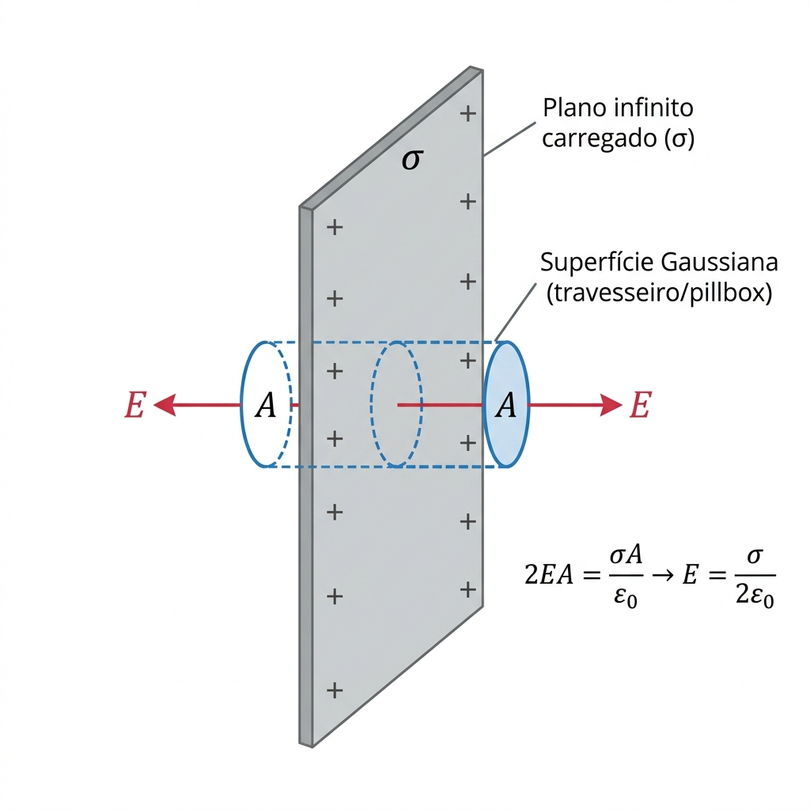

A Regra de Ouro
Lei de Gauss — Passo-a-Passo de Resolução
Esta é a Q1 garantida da prova. Memorize este fluxograma.
A Equação Central
Lado esquerdo = Geometria (área da superfície). Lado direito = Carga envolvida (integral se ρ variar).
Identifique a Simetria
Esférica? Cilíndrica? Planar?
Escolha a Superfície
Esfera, Cilindro, ou Travesseiro Gaussiano
Calcule E·A
E sai da integral pois é constante na superfície
Calcule qenv
ρ uniforme? q = ρ·V. Não uniforme? Integre!
Isole E
E = qenv / (ε0 · A)
Geometria #1
Esfera Carregada (ρ Uniforme)
Caiu em 5 de 5 provas. É a Q1 mais provável. Domine as duas regiões: dentro e fora.

Região Interior (r < R)
A superfície gaussiana está dentro da esfera.
Lado Esquerdo (Geometria):
Lado Direito (Carga Envolvida):
Resultado Final:
📈 Comportamento: E cresce linearmente com r. No centro (r=0), E = 0.
Região Exterior (r > R)
A superfície gaussiana está fora da esfera.
Lado Esquerdo (Geometria):
Lado Direito (Carga Total):
Resultado Final:
📉 Comportamento: Parece uma carga pontual! E cai com 1/r². Toda a carga se comporta como se estivesse concentrada no centro.
⭐ Caso Especial: ρ Não Uniforme (ρ = ar)
Quando a densidade varia com r, não pode usar q = ρ·V. Tem de integrar!
Passo 1: Elemento de Volume
dV = 4πr² dr
Passo 2: Elemento de Carga
dq = ρ(r)·dV = ar·4πr²dr
Passo 3: Integrar
qenv = ∫0r 4πa·r'³ dr' = πar4
Resultado Final (r < R):
Geometria #2
Cilindro Carregado
Caiu em 2023.2 (Q1). A superfície gaussiana é um cilindro concêntrico. Só a lateral contribui com fluxo!

Interior (r < R) — ρ Uniforme
Fluxo pela lateral:
Carga envolvida:
Resultado:
Cresce linearmente com r (tal como a esfera).
Exterior (r > R)
Fluxo pela lateral:
Carga total (toda a seção):
Resultado:
Cai com 1/r (e não 1/r² como na esfera!).
⚠️ Porque as tampas não contribuem? Nas tampas do cilindro gaussiano, o campo E⃗ é perpendicular ao vetor dA⃗ (que aponta para fora da tampa). Logo E⃗·dA⃗ = 0 nas tampas. Só conta a lateral!
Geometria #3
Plano Infinito Carregado
A superfície gaussiana é um "travesseiro" (pillbox cilíndrica) que atravessa o plano.

O campo sai pelos dois lados:
Carga dentro da pillbox:
Resultado:
🤯 Curioso: O campo não depende da distância r! Não importa quão longe você está do plano, o campo é sempre o mesmo. Isso é porque o plano é infinito.
Geometria #4
Casca Esférica Condutora (Metal)
Condutor em equilíbrio: campo interno é sempre zero. Toda a carga fica na superfície.
Dentro (r < R)
Blindagem eletrostática. Nenhum campo chega ao interior.
Na Superfície (r = R)
Note: sem o fator 2 (diferente do plano). Campo sai só por um lado.
Fora (r > R)
Idêntico a uma carga pontual Q no centro.
📐 Referência Rápida — Áreas e Volumes
| Geometria | Área da Sup. Gaussiana | Volume Envolvido | Dica |
|---|---|---|---|
| Esfera | 4πr² | (4/3)πr³ | A = derivada do V em relação a r |
| Cilindro (lateral) | 2πr·h | πr²·h | Lateral = perímetro × altura |
| Pillbox (plano) | 2A (2 tampas) | — | Só as tampas contam; lateral ⊥ E |